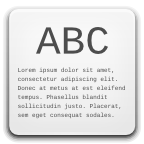
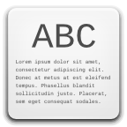

| View resume | Download as PDF |
|  |

Born in Sao Paulo, Brazil, currently living just near it. Applied for Computer Science on FEI Engineering College. Dropped the college just before the bachelor title due to time constraints related to my job, planning to finish it soon.
Working with Java technology since 2007 I had the pleasure to meet and work with a lot of nice and skillful people along my carreer, who helped me to learn from their decisions and to make my owns
My professional experience is mainly based on Java, I have the Java Programmer (SCJP) and Web Component Developer (SCWCD) certifications and currently I am planning to take the SCJD exam. Besides that I have strong knowledge on Python, love to program the most various things with Javascript (think quote ticker addon for firefox or snake and tetris games) and feel very confortable programming on languages like Ruby, ol' good C and C#.
As part of the bachelor course wrote a thesis about Exchange Market and since then wrote several programs to help one operate on stocks market, scan for a stock with a potential good spread and currently planning to develop a DSL for broker robots in Portuguese.
Speciality: Java web applications. Pattern matching on stock charts. Data-mining and text analytics, statistical natural language processing.
In my free-time: skating, gym, movies and listening to music.
| View resume | Download as PDF |
|  |